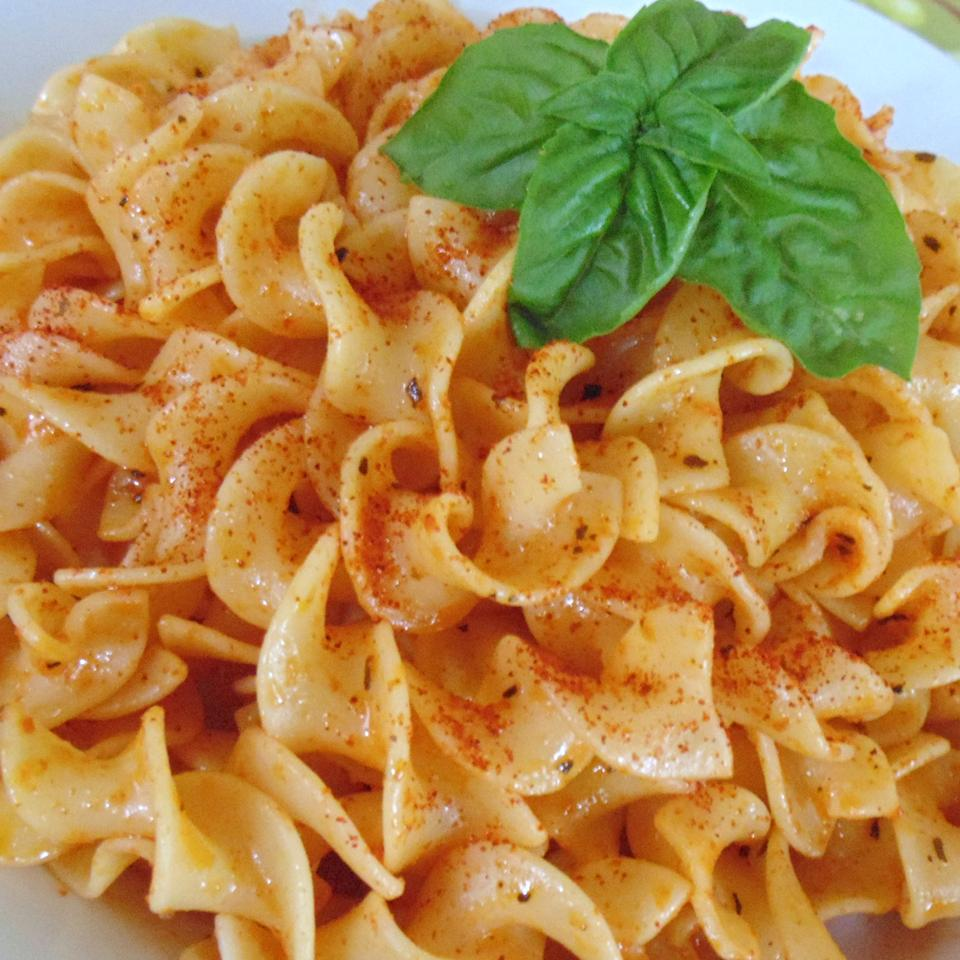

Easy Sriracha Noodles

Description
Spicy egg noodles with sriracha and basil.
This recipe will yield 5 servings.
Ingredients
- 1 (10 ounce) package egg noodles
- 3 1/2 tablespoons sriracha sauce
- 1 tablespoon peanut oil
- 1 tablespoon rice vinegar
- 1 1/2 teaspoons dried basil
- 1 teaspoon paprika
- Freshly cracked black pepper
Directions
- Bring a pot of lightly salted water to a boil. Cook egg noodles in the boiling water, stirring occasionally until cooked through but firm to the bite, about 5 minutes. Drain and transfer noodles to a bowl.
- Stir sriracha sauce, butter, peanut oil, rice vinegar, basil, paprika, and black pepper together in the same pot over medium heat until sauce is smooth and heated through, 3 to 5 minutes. Add noodles to sauce and toss to coat. Cool before serving.
Source: Allrecipes - Easy Sriracha Noodles